Function：
Remove Iron Rust & Dust Easily
Restore Like New Color
Safe For Wheels & Paint
Easy to use
Product details:
Remove Iron Rust & Dust Easily.JB-18 Iron Remover can easily remove the brake dust on the wheel and the rust spots on the paint, which cannot be removed with other cleaner.
Restore Like New Color. Tiny iron dust rust spots will make your car paint lose luster, and a large amount of brake dust will make the wheels look bad. Now you can immediately restore the new color of the paint and the wheels with JB-18 Iron Remover.
Safe For Wheels & Paint. Don't try to use strong acid alkaline chemicals to remove stubborn iron dust and rust, please feel free to use this product that will not damage your car paint and wheels.
Attention :
1. Remove the brake dust on the wheel
2.The rust spots on the paint
The more iron powder, the greater the purple reaction!
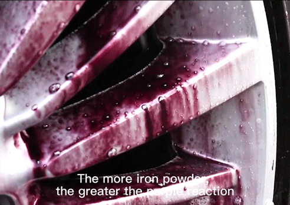
2. Rinse it with a high-pressure water gun.
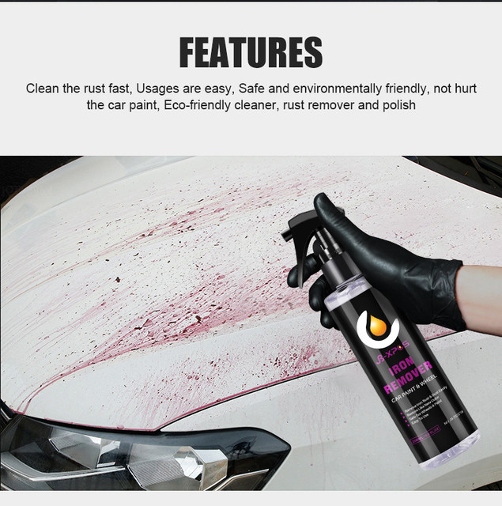
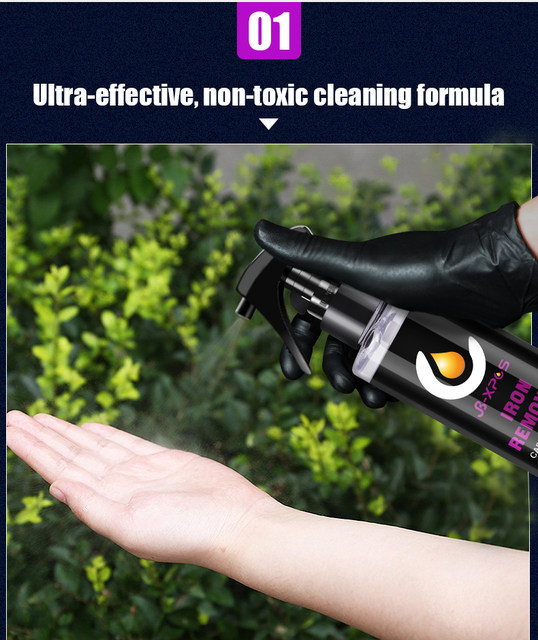
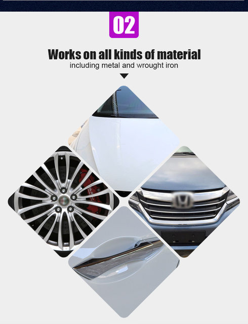
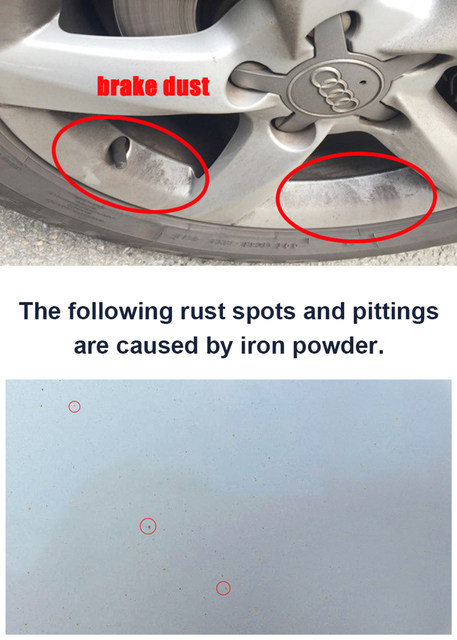
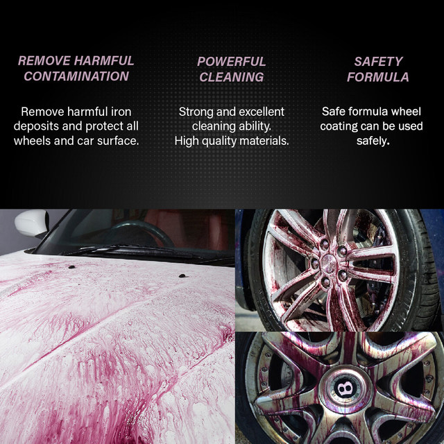
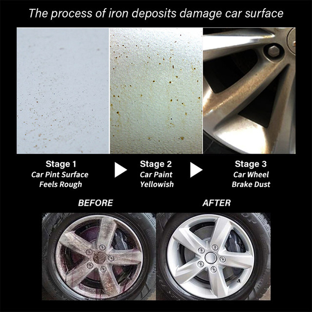
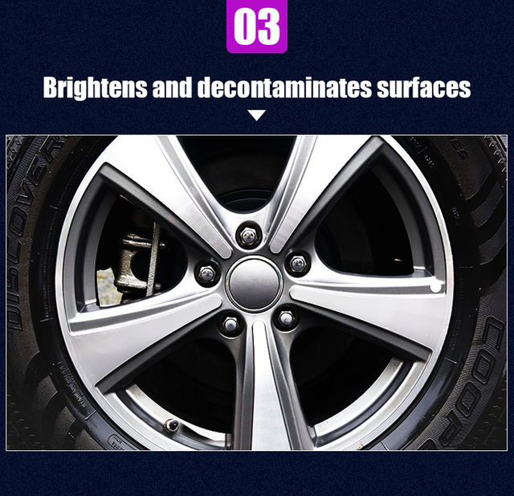
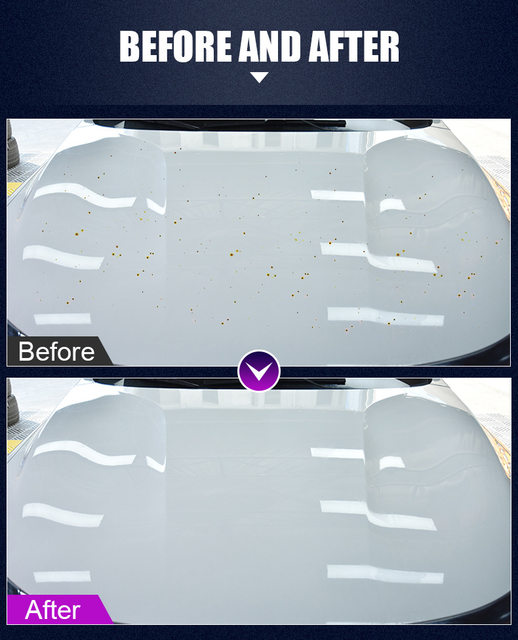
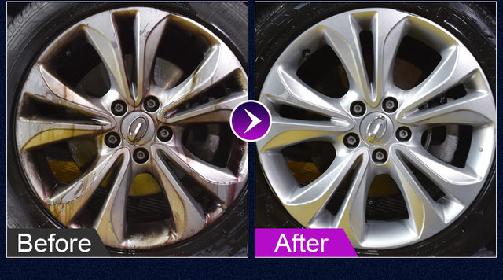
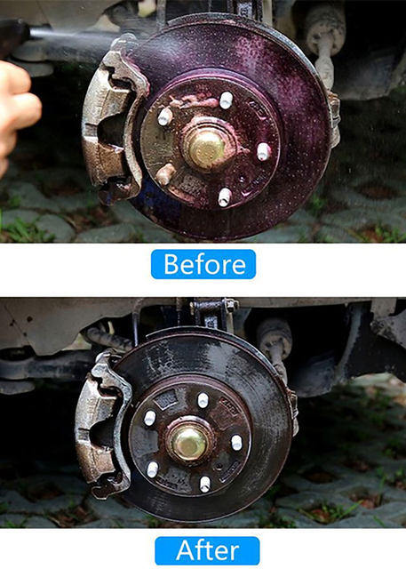
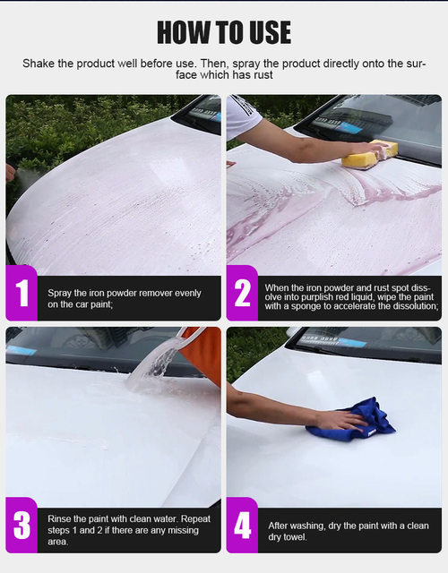
ATTENTION:
In order to avoid damage caused by transportation, the bottle and nozzle will be separated in the postal package. And the bottle mouth will be sealed with aluminum film.
Before use, check whether the contents of the parcel are complete, and then assemble the bottle and the nozzle.
If there is damage or loss, please contact us immediatel